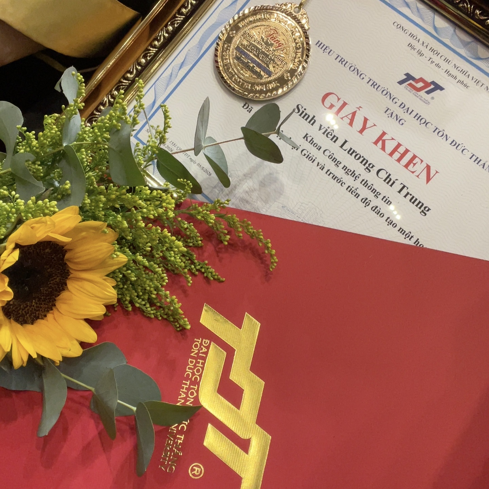
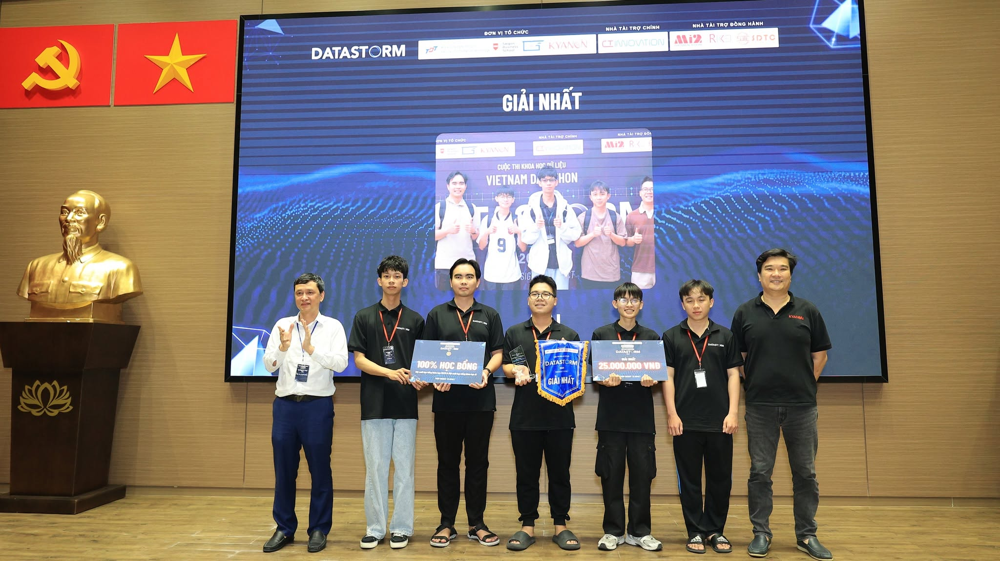
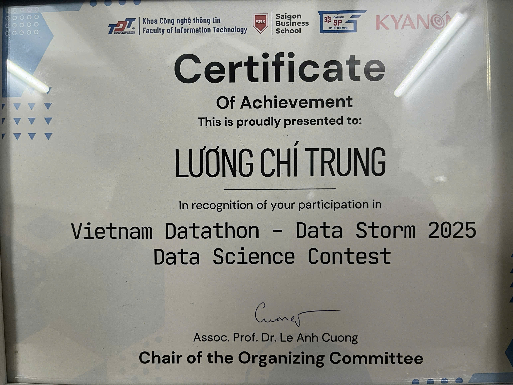
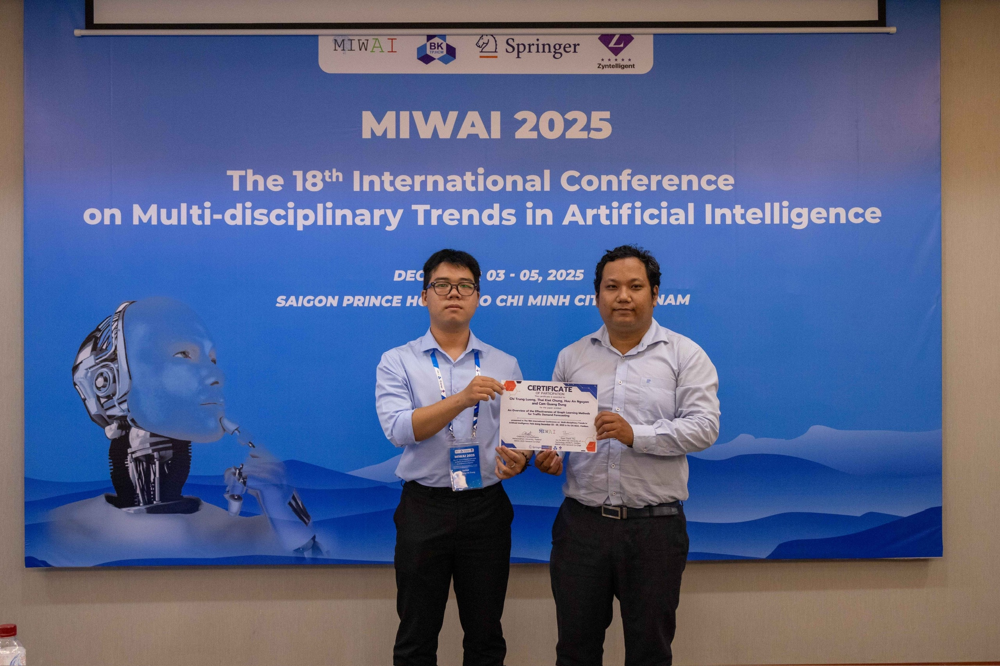
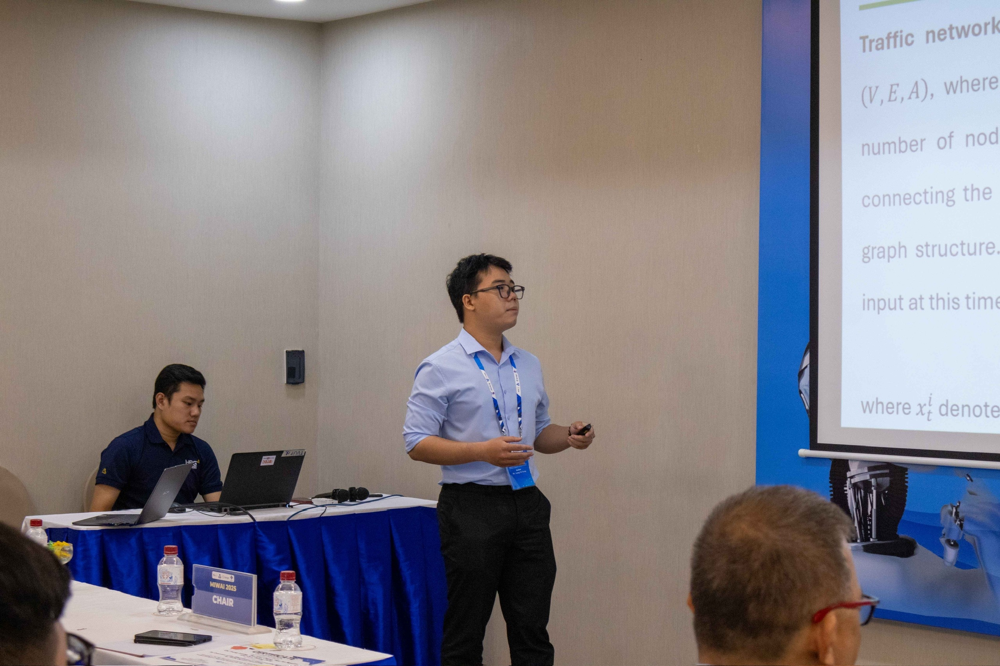
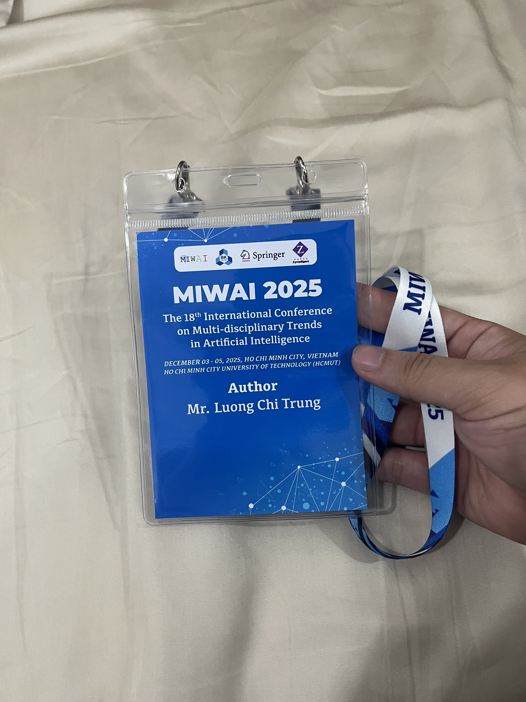

Mastering RAG Pipelines in Production
A deep dive into optimizing vector search and mitigating hallucination for enterprise LLM applications.
Read Article →I am a passionate researcher specializing in Large Multimodal Models (LMMs), Computer Vision, and Natural Language Processing. My work focuses on creating intelligent, personalized AI systems that can seamlessly understand and generate both vision and language. I enjoy tackling complex problems and building innovative solutions that bridge the gap between human concepts and machine understanding.
Currently, I am actively exploring new ways to personalize generative AI, making it more adaptable and useful for specific user needs. When I'm not coding or reading papers, I love exploring new technologies and sharing my knowledge with the community.








A deep dive into optimizing vector search and mitigating hallucination for enterprise LLM applications.
Read Article →
Comparing modern architectures like Mamba with traditional Transformers for sequential data processing tasks.
Read Article →
How we reduced data preparation time by 80% using custom lightweight fine-tuned models for data imputation.
Read Article →
Built a multi-agent orchestration framework capable of autonomous task planning, tool execution, and self-reflection.
View Details →
Developed an advanced RAG pipeline integrating semantic search, vector databases, and real-time knowledge synthesis.
View Details →
Designed a scalable architecture for deploying and managing custom LLMs with optimized inference and dynamic load balancing.
View Details →
Created a robust Optical Character Recognition system using Vision Transformers for high-accuracy document digitization in noisy environments.
View Details →
Applied parameter-efficient fine-tuning (PEFT/LoRA) techniques to adapt foundation models for specialized medical domain applications.
View Details →ICCIES 2026
[ProjectPage, Paper]
MIWAI 2025
[ProjectPage, Paper]